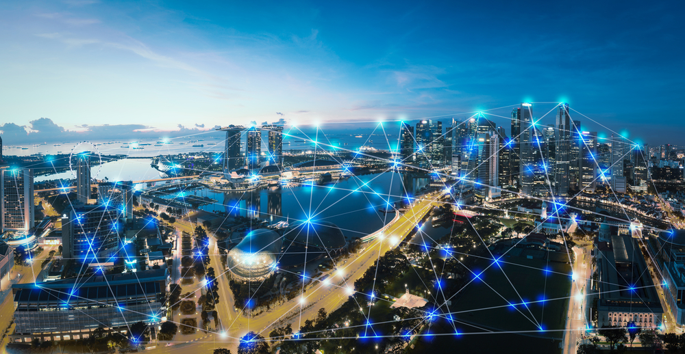

O consumo digital de energia refere-se à quantidade de eletricidade utilizada para alimentar dispositivos eletrônicos (como computadores, smartphones e TVs), redes de internet, data centers e serviços em nuvem. Com a crescente digitalização da sociedade, esse consumo tem se tornado uma parcela significativa da demanda energética mundial.
Esse tipo de consumo, muitas vezes invisível aos olhos do usuário comum, envolve uma complexa infraestrutura que opera ininterruptamente para manter plataformas digitais, streaming de vídeo, redes sociais, e armazenamento de dados funcionando 24 horas por dia.
Números Alarmantes
De acordo com estimativas recentes, os sistemas digitais já são responsáveis por aproximadamente 4% das emissões globais de dióxido de carbono (CO₂). Se nenhuma medida for adotada, esse número poderá dobrar até 2030, ultrapassando as emissões de setores tradicionalmente poluentes, como a aviação civil. A digitalização, apesar de promover avanços em diversos setores, também traz um impacto ambiental considerável, especialmente quando não acompanhada de práticas sustentáveis.
Fontes de Maior Consumo de Energia Digital
As principais fontes de elevado consumo energético digital incluem: Plataformas de streaming de vídeo e música (como YouTube, Netflix e Spotify); Mineração de criptomoedas, que requer computadores especializados operando em tempo integral; Redes sociais, que processam grandes volumes de dados em tempo real; Armazenamento em nuvem e data centers, que precisam de energia constante não apenas para processar, mas também para resfriar os equipamentos. Esses sistemas operam em larga escala e demandam estruturas de climatização, segurança de dados e redundância energética, o que agrava o impacto ambiental.
Uso Consciente e Sustentável
É possível reduzir significativamente o impacto ambiental da tecnologia com pequenas mudanças de hábito. Algumas práticas sustentáveis incluem:
Apagar arquivos e e-mails desnecessários, liberando espaço nos servidores;
Evitar o uso prolongado e sem propósito de redes sociais e plataformas de vídeo;
Desligar dispositivos que não estão em uso, evitando o modo "standby", que também consome energia;
Preferir plataformas mais eficientes e leves, que consomem menos recursos para carregar e transmitir dados.
Como Reduzir o Gasto Energético no Dia a Dia?
Adotar boas práticas no uso de aparelhos eletrônicos pode fazer grande diferença. Algumas dicas:
Ativar o modo de economia de energia em computadores, notebooks e celulares;
Fechar abas, janelas e aplicativos que não estão sendo utilizados;
Desligar o roteador Wi-Fi e equipamentos eletrônicos da tomada ao sair de casa;
Utilizar navegadores leves e aplicativos otimizados para menor uso de dados e energia.
Conscientização e Investimento em Tecnologia Verde
Diversas empresas de tecnologia vêm investindo em energias renováveis (como solar e eólica) para abastecer seus data centers, além de desenvolverem servidores mais eficientes. Iniciativas como a neutralização de carbono digital, por meio do reflorestamento e compensação ambiental, também estão em crescimento. Contudo, a responsabilidade não é apenas das grandes corporações: o engajamento dos usuários é fundamental. A mudança começa com cada pessoa adotando hábitos mais conscientes no ambiente digital.
Conclusão
O consumo de energia digital representa uma ameaça silenciosa e crescente ao meio ambiente. Apesar de não emitir fumaça ou deixar resíduos visíveis, ele contribui significativamente para o aquecimento global e o esgotamento de recursos naturais. Entretanto, com educação ambiental, conscientização e pequenas mudanças de comportamento, é possível reduzir esse impacto e promover uma relação mais sustentável com a tecnologia. O futuro depende das escolhas que fazemos hoje, inclusive no mundo virtual.

Clique no botão abaixo para ter uma ideia do consumo médio de energia baseado no uso diário dos seus dispositivos.